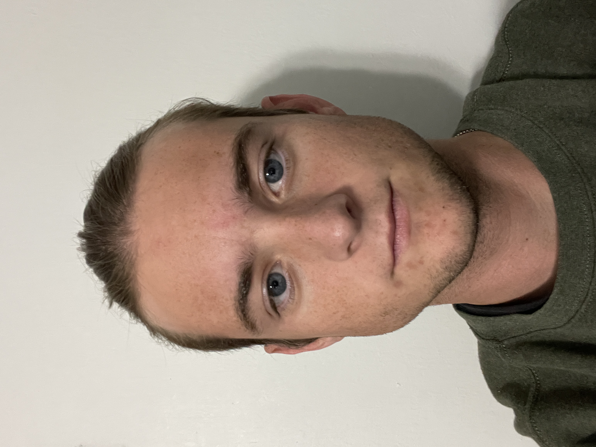

About Me
Ryan Freese created this website as a project for his
Distributed Infromation Systems class. The theme of this website
is inspired by his past experience in the Biology and Conservation fields. Ryan
currently works in construction management as a project engineer where he has
gained experience in pre-construction. He also oversees in the day-to-day managerial
operations under the guidance of PMs at multiple construction sites in South Florida.
As someone who has only recently began his professional career, Ryan wants to combine his
scientific experience with his professional project management experience to become a data scientist.
He is enrolled in the Global Business Analytics and Information Systems master program at USF where he will
(hopefully) graduate in Spring 2024.